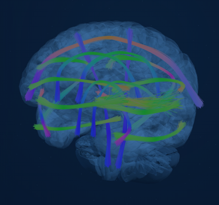

03 / NEURAL LAYER
向下扎根。
功能层不是神经层的替代。三通道似然经 PSE 贝叶斯融合，更新状态后验；功能结构始终保留自己的解释位置。
左右 · X前后 · Z上下 · Y

DTI 纤维以局部切线方向编码颜色，仅作结构可视化。
03 / NEURAL LAYER
功能层不是神经层的替代。三通道似然经 PSE 贝叶斯融合，更新状态后验；功能结构始终保留自己的解释位置。

DTI 纤维以局部切线方向编码颜色，仅作结构可视化。